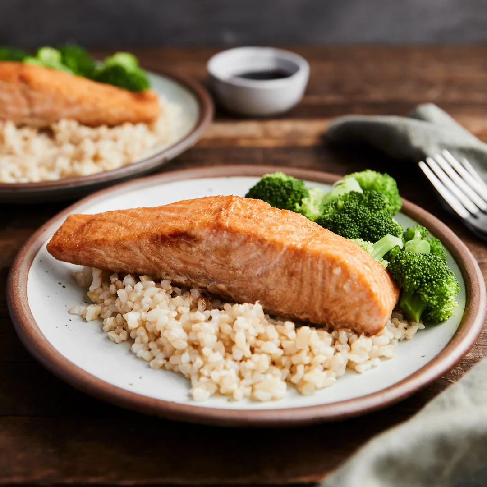

Salmon, Broccoli, Rice

Description:
Simplistic and delicious! Perfect for dinner any day of the week.
Quick and easy to cook for those of any skill level.
Ingredients:
- Salmon
- Plain white rice - Cooked
- Broccoli
- Light or Dark Soy Sauce
- Frying pan
- Extra virgin olive oil
- Salt and Pepper
Instructions:
- Preheat frying pan, medium to high heat
- Coat pan with 1 tablespoon of olive oil
- Add salt and pepper to salmon, glaze with soy sauce
- Add salmon to pan, moving every few seconds to prevent sticking
- Cut broccoli into small sized florets, add to pan
- after 7-8 minutes, turn salmon over to cook for another 7-8 minutes
- Remove salmon, put on plate ready to serve
- Add rice to pan with broccoli, stir until all heated
- Sprinkle on salt and pepper
- Final stir before serving.
Home